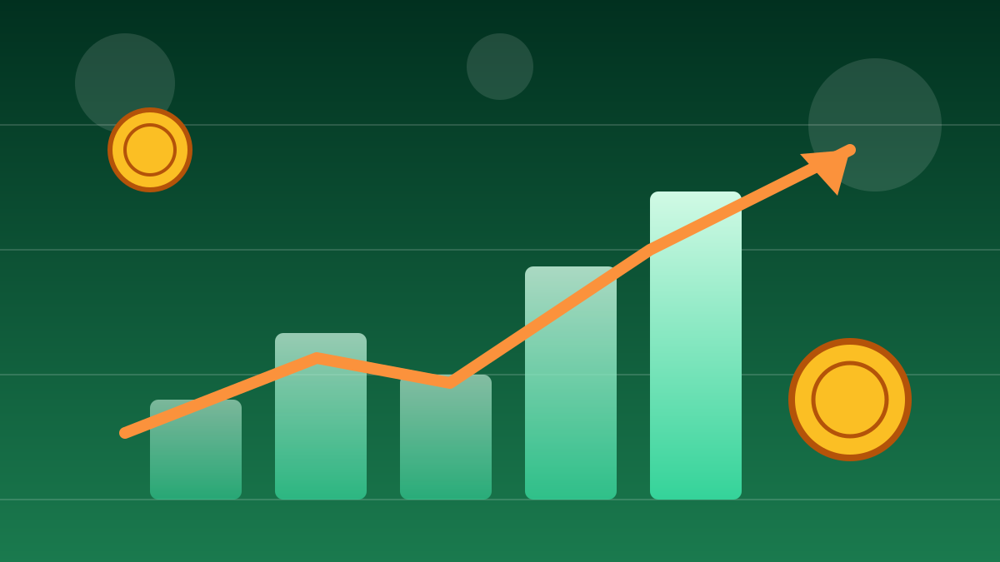

1 / 6

💰 EKONOMI
Optimis Turun, Belanja Naik?! 🤯
Survei BI September 2026 bawa plot twist: keyakinan konsumen melemah, tapi tangan masyarakat makin rajin jajan. Geser buat spill lengkapnya →
2 / 6
📉
IKK Turun Tipis ke 118,1
Bank Indonesia rilis Survei Konsumen September 2026 lewat siaran pers Departemen Komunikasi BI, Kamis (8/10). Indeks Keyakinan Konsumen (IKK) tercatat 118,1 — turun 0,4 poin dari 118,5 pada Agustus.
Kabar baiknya: angka di atas 100 = masih zona optimis. Jadi walau melemah, konsumen RI belum pesimis.
3 / 6
🧭
Bedah Komponennya: Hari Ini vs Masa Depan
Indeks Kondisi Ekonomi Saat Ini (IKE) turun dari 109,4 ke 107,5 — artinya masyarakat menilai kondisi hari ini agak melemah.
Tapi Indeks Ekspektasi Konsumen (IEK) justru naik dari 127,6 ke 128,7 — alias optimis soal 6 bulan ke depan. Hari ini galau, masa depan gas. 🔥
4 / 6
🛍️
Plot Twist: Porsi Belanja Justru Naik
Meski IKK turun, porsi pendapatan buat konsumsi naik dari 74,2% ke 74,9%. Di saat yang sama, porsi tabungan turun dari 15,8% ke 15,4% dan cicilan turun dari 10% ke 9,7%.
Artinya: uangnya makin banyak dihabiskan buat belanja, makin sedikit yang ditabung.
5 / 6
🧒
Anak Muda Paling Pede
Kelompok usia 20–30 tahun justru makin optimistis — IKK-nya 127,9, tertinggi dibanding semua kelompok usia.
Generasi muda gas sendiri sementara kelompok yang lebih tua malah melemah. Valid banget sih vibes anak muda sekarang. 😎
6 / 6
🤔
Efeknya ke lo apa?
Lo mungkin ngerasa ekonomi "biasa aja", tapi tetap checkout keranjang, ngopi, jajan — itu yang lagi terjadi di seluruh Indonesia sekarang.
Hati-hati: porsi tabungan makin tipis. Belanja boleh, tapi pastikan dana darurat tetap aman — jangan sampai akhir bulan tinggal notifikasi m-banking. 😅